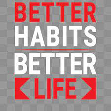

Home
Articles
Habits
Skills
Quotes
Habits

Practice Voice Exercises
Why? Because I want to speak openly and confidently with my natura voice.
Body and Posture Awareness
Why? Because it help me relax body's tension and so I can learn to lisen to what my body is telling me.
Breath Awareness and deep Breathing
Why? Because it brings me back in the present moment and help to keep emotions in balane.
Develop Concentration
Why? Because we live in a world of distractions and concentration is one of the nost valuable skills to develop to succeed in life.
Emotinal State Awareness
Why? Because emotions are the driving force behind all of my actions and becoming aware of enmotions is the first step for mastering them.
Drinking 8 Glasses of Water Per Day
Why? Because keeping hydrated is cruccial for health and well-being.
Cultivate a State of Adundance
Why? Because scarcity mindsetis the source of all suffering and I want to live a happy life.
S